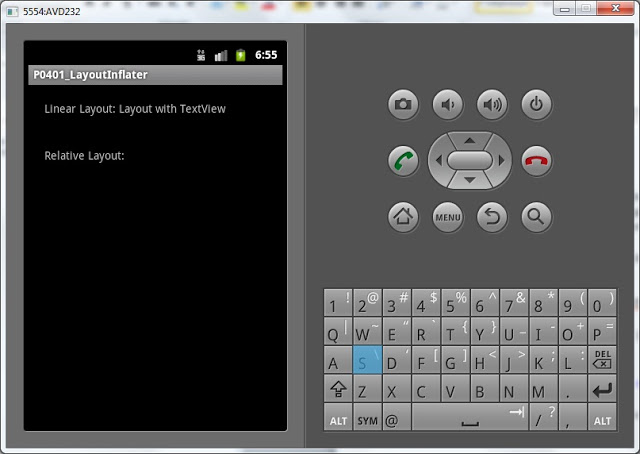
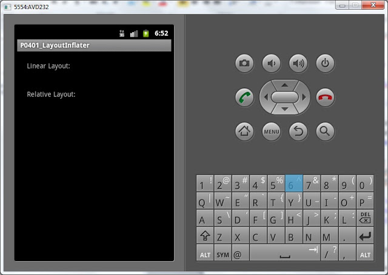
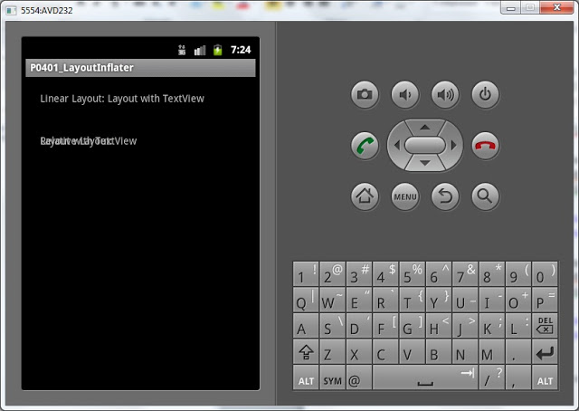

В этом уроке:
- разбираем как можно использовать LayoutInflater
После изучения SQLite самое время приступить к изучению списков – List. Но перед этим полезно будет узнать про LayoutInflater. Это знание пригодится нам в создании расширенных списков. Также перед этим уроком рекомендую снова прочесть урок про LayoutParams, освежить знания.
LayoutInflater – это класс, который умеет из содержимого layout-файла создать View-элемент. Метод который это делает называется inflate. Есть несколько реализаций этого метода с различными параметрами. Но все они используют друг друга и результат их выполнения один – View.
Мы рассмотрим эту реализацию – public View inflate (int resource, ViewGroup root, boolean attachToRoot)
Как видим, на вход метод принимает три параметра:
resource - ID layout-файла, который будет использован для создания View. Например - R.layout.main
root – родительский ViewGroup-элемент для создаваемого View. LayoutParams от этого ViewGroup присваиваются создаваемому View.
attachToRoot – присоединять ли создаваемый View к root. Если true, то root становится родителем создаваемого View. Т.е. это равносильно команде root.addView(View). Если false – то создаваемый View просто получает LayoutParams от root, но его дочерним элементом не становится.
Посмотрим на практике.
Создадим проект:
Project name: P0401_LayoutInflater
Build Target: Android 4.0
Application name: LayoutInflater
Package name: ru.startandroid.develop.p0401layoutinflater
Create Activity: MainActivity
Открываем main.xml и рисуем такой экран:
<?xml version="1.0" encoding="utf-8"?>
<LinearLayout
xmlns:android="http://schemas.android.com/apk/res/android"
android:layout_width="fill_parent"
android:layout_height="fill_parent"
android:orientation="vertical">
<LinearLayout
android:id="@+id/linLayout"
android:layout_width="match_parent"
android:layout_height="wrap_content"
android:layout_margin="20dp">
<TextView
android:layout_width="wrap_content"
android:layout_height="wrap_content"
android:text="Linear Layout: ">
</TextView>
</LinearLayout>
<RelativeLayout
android:id="@+id/relLayout"
android:layout_width="match_parent"
android:layout_height="wrap_content"
android:layout_margin="20dp">
<TextView
android:layout_width="wrap_content"
android:layout_height="wrap_content"
android:text="Relative Layout: ">
</TextView>
</RelativeLayout>
</LinearLayout>На экране две ViewGroup - linLayout и relLayout. В них по TextView с соответствующим текстом.
Создадим еще один layout-файл text.xml:
<?xml version="1.0" encoding="utf-8"?>
<TextView
xmlns:android="http://schemas.android.com/apk/res/android"
android:id="@+id/tvLayout"
android:layout_width="match_parent"
android:layout_height="match_parent"
android:text="Layout with TextView">
</TextView>Тут просто TextView без всяких ViewGroup. На нем мы и будем испытывать LayoutInflater.
Открываем MainActivity.java и пишем код:
package ru.startandroid.develop.p0401layoutinflater;
import android.app.Activity;
import android.os.Bundle;
import android.util.Log;
import android.view.LayoutInflater;
import android.view.View;
import android.view.ViewGroup.LayoutParams;
import android.widget.TextView;
public class MainActivity extends Activity {
final String LOG_TAG = "myLogs";
/** Called when the activity is first created. */
public void onCreate(Bundle savedInstanceState) {
super.onCreate(savedInstanceState);
setContentView(R.layout.main);
LayoutInflater ltInflater = getLayoutInflater();
View view = ltInflater.inflate(R.layout.text, null, false);
LayoutParams lp = view.getLayoutParams();
Log.d(LOG_TAG, "Class of view: " + view.getClass().toString());
Log.d(LOG_TAG, "LayoutParams of view is null: " + (lp == null));
Log.d(LOG_TAG, "Text of view: " + ((TextView) view).getText());
}
}Мы получаем LayoutInflater методом getLayoutInflater, используем его для получения View-элемента из layout-файла text.xml и считываем LayoutParams у свежесозданного view.
Обратите внимание, на параметры, которые мы использовали для метода inflate. Мы указали ID layout-ресурса, передали null в качестве родительского элемента и, соответственно, привязка к родителю - false.
Все сохраним и запустим.
На экране ничего не изменилось. Т.к. мы конвертнули layout в view, но никуда его не поместили. Он просто висит в памяти.

Смотрим лог:
Class of view: class android.widget.TextView
LayoutParams of view is null: true
Text of view: Layout with TextView
Мы видим класс созданного элемента - TextView. Все верно - этот элемент и был в файле text.xml. Далее видим null вместо LayoutParams. Это произошло потому, что родителя в методе inflate мы указали null. А именно от родителя view и должен был получить LayoutParams. Третья строка лога показывает текст TextView. Он тот же, что и в layout-файле text.xml – все верно.
Давайте немного изменим программу. Будем добавлять наш созданный элемент в linLayout из main.xml. Делается это просто – командой addView.
LayoutParams lp = view.getLayoutParams();
LinearLayout linLayout = (LinearLayout) findViewById(R.id.linLayout);
linLayout.addView(view);
Log.d(LOG_TAG, "Class of view: " + view.getClass().toString()); (добавляете только выделенные строки)
Мы нашли linLayout с экрана и добавили в него созданный с помощью LayoutInflater элемент.
Сохраняем, запускаем. Видим, что элемент добавился на экран в linLayout.

Теперь давайте попробуем указать родителя (root) при вызове метода inflate. Перепишем метод onCreate:
public void onCreate(Bundle savedInstanceState) {
super.onCreate(savedInstanceState);
setContentView(R.layout.main);
LayoutInflater ltInflater = getLayoutInflater();
LinearLayout linLayout = (LinearLayout) findViewById(R.id.linLayout);
View view1 = ltInflater.inflate(R.layout.text, linLayout, false);
LayoutParams lp1 = view1.getLayoutParams();
Log.d(LOG_TAG, "Class of view1: " + view1.getClass().toString());
Log.d(LOG_TAG, "Class of layoutParams of view1: " + lp1.getClass().toString());
Log.d(LOG_TAG, "Text of view1: " + ((TextView) view1).getText());
RelativeLayout relLayout = (RelativeLayout) findViewById(R.id.relLayout);
View view2 = ltInflater.inflate(R.layout.text, relLayout, false);
LayoutParams lp2 = view2.getLayoutParams();
Log.d(LOG_TAG, "Class of view2: " + view2.getClass().toString());
Log.d(LOG_TAG, "Class of layoutParams of view2: " + lp2.getClass().toString());
Log.d(LOG_TAG, "Text of view2: " + ((TextView) view2).getText());
}Мы находим элементы linLayout и relLayout с экрана и с помощью LayoutInflater создаем два View-элемента из layout-файла text.xml. Для первого указываем root – linLayout, для второго – relLayout. Но третий параметр attachToRoot оставляем false. Это значит, что созданный View-элемент получит LayoutParams от root-элемента, но не добавится к нему.
Все сохраним, запустим. На экране ничего не поменялось. Т.к. мы ни к чему новые элементы не добавляли и attachToRoot = false.

Смотрим лог:
Class of view1: class android.widget.TextView
Class of layoutParams of view1: class android.widget.LinearLayout$LayoutParams
Text of view1: Layout with TextView
Class of view2: class android.widget.TextView
Class of layoutParams of view2: class android.widget.RelativeLayout$LayoutParams
Text of view2: Layout with TextView
По логам видно, что класс созданных элементов – TextView. А класс LayoutParams различается. В первом случае – это LinearLayout$LayoutParams, т.к. в качестве root элемента в методе inflate мы указали linLayout, а это объект класса LinearLayout. Во втором случае класс LayoutParams у созданного элемента - RelativeLayout$LayoutParams. Потому, что в качестве root указали relLayout (класс RelativeLayout).
Теперь у нас два варианта, как добавить созданные view1 и view2 на экран.
1) Снова использовать методы addView
2) Передавать true в качестве третьего параметра метода inflate. Тогда созданный View-элемент будет добавлен к root.
Выберем второй вариант и внесем изменения в код:
public void onCreate(Bundle savedInstanceState) {
super.onCreate(savedInstanceState);
setContentView(R.layout.main);
LayoutInflater ltInflater = getLayoutInflater();
LinearLayout linLayout = (LinearLayout) findViewById(R.id.linLayout);
View view1 = ltInflater.inflate(R.layout.text, linLayout, true);
LayoutParams lp1 = view1.getLayoutParams();
Log.d(LOG_TAG, "Class of view1: " + view1.getClass().toString());
Log.d(LOG_TAG, "Class of layoutParams of view1: " + lp1.getClass().toString());
RelativeLayout relLayout = (RelativeLayout) findViewById(R.id.relLayout);
View view2 = ltInflater.inflate(R.layout.text, relLayout, true);
LayoutParams lp2 = view2.getLayoutParams();
Log.d(LOG_TAG, "Class of view2: " + view2.getClass().toString());
Log.d(LOG_TAG, "Class of layoutParams of view2: " + lp2.getClass().toString());
}Передаем true в качестве третьего параметра в методе inflate и убираем строки выведения в лог текстов из TextView. Сейчас будет понятно почему.
Все сохраним и запустим приложение.

Как видим, созданные TextView появились в своих родителях, которых мы указали в методе inflate. В RelativeLayout элементы наложились друг на друга, т.к. мы не настроили расположение. В данный момент это не существенно.
Смотрим лог:
Class of view1: class android.widget.LinearLayout
Class of layoutParams of view1: class android.widget.LinearLayout$LayoutParams
Class of view2: class android.widget.RelativeLayout
Class of layoutParams of view2: class android.widget.LinearLayout$LayoutParams
Обратите внимание на класс элементов. В первом случае - это LinearLayout, а во втором - RelativeLayout. Т.е. метод inflate вернул нам не созданные из layout-файла View-элементы, а те, что мы указывали как root. А созданные из layout-файла View элементы он добавил в root как дочерние аналогично команде addView. Это произошло потому, что мы указали true в третьем параметре (attachToRoot) метода inflate.
Соответственно LayoutParams для view1 и view2 будет LinearLayout$LayoutParams, т.к. linLayout и relLayout имеют родителя LinearLayout. И LayoutParams берут от него.
Для закрепления темы на следующем уроке сделаем пример поинтереснее.